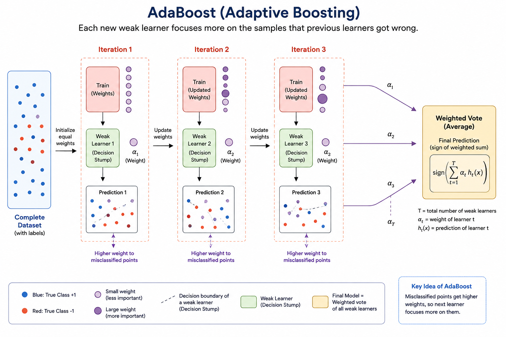
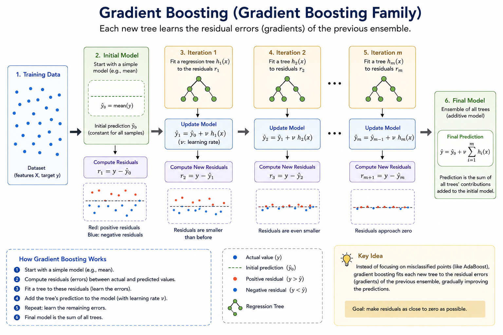
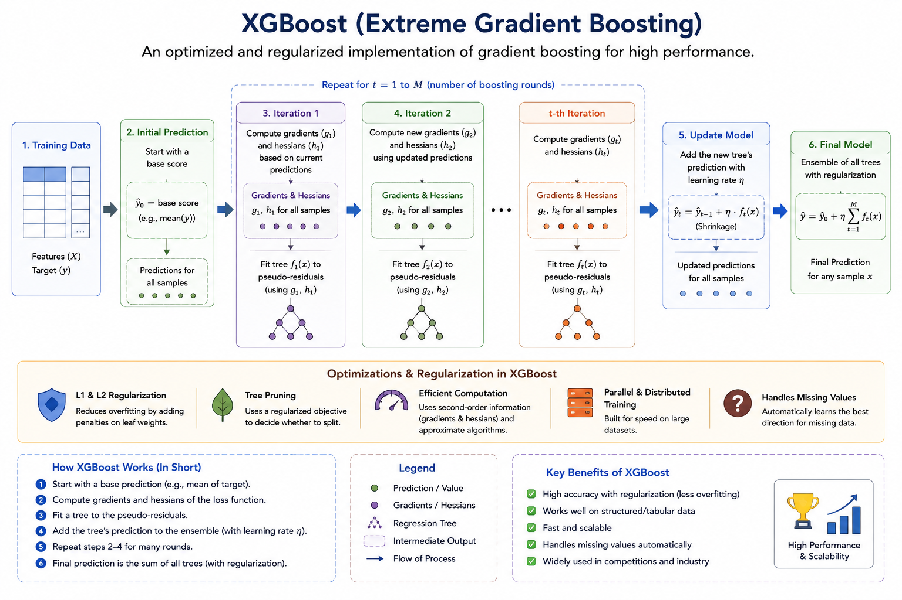
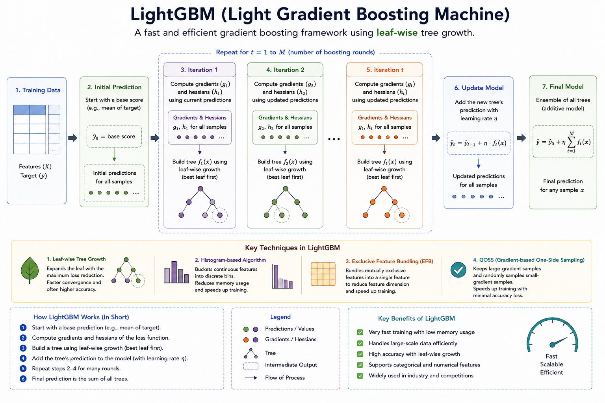
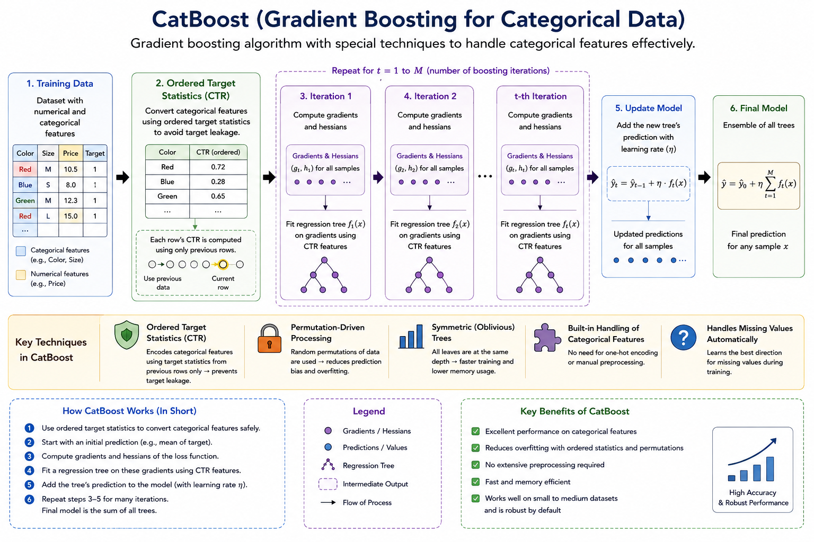

Chapter 1: Contents
- 1.1 What We Already Know: Gradient Descent
- 1.2 The Problem: What if You Can't Parameterize Your Model?
- 1.3 The Core Idea: Boosting
- 1.4 AdaBoost: The Predecessor
- 1.5 Gradient Boosting: The Unifying Framework
- 1.6 Functional Gradient Descent — The Key Insight
- 1.7 Gradient Boosting Algorithm — Step by Step
- 1.8 Worked Example: MSE Loss
- 1.9 Worked Example: Log-Loss (Binary Classification)
- 1.10 Gradient Boosting vs Gradient Descent — Summary Table
- 1.11 Why Not Just Use One Big Tree?
- 1.12 Regularization in Gradient Boosting
- 1.13 Variants: XGBoost, LightGBM, CatBoost
1.1 What We Already Know: Gradient Descent
Before jumping into Gradient Boosting, let us quickly revisit Gradient Descent. In classical machine learning, we have a model \( f(\mathbf{x}; \boldsymbol{\theta}) \) parameterized by a vector \( \boldsymbol{\theta} \in \mathbb{R}^p \). We define a loss function that measures how wrong our predictions are:
where \( L \) is a per-sample loss (e.g., squared error, cross-entropy), \( y_i \) is the true label, and \( f(\mathbf{x}_i;\boldsymbol{\theta}) \) is the model's prediction for sample \( i \).
Gradient Descent updates the parameters iteratively in the direction of steepest descent:
where \( \eta > 0 \) is the learning rate. Expanding the gradient:
This is powerful, but it has a fundamental assumption: the model must be differentiable with respect to its parameters. What happens when it is not?
1.2 The Problem: What if You Can't Parameterize Your Model?
Consider a Decision Tree. A tree splits data using hard thresholds (e.g., "Is feature \( x_3 > 5.2 \)?"). The prediction is a piecewise-constant function over the input space. There is no smooth parameter vector \( \boldsymbol{\theta} \) that you can take derivatives of. The split decisions are discrete, and the tree structure itself is part of the model.
So how do we "optimize" a model built out of decision trees? We cannot compute \( \nabla_{\boldsymbol{\theta}} \mathcal{L} \) because there is no \( \boldsymbol{\theta} \)!
This is exactly the gap that Gradient Boosting fills.
1.3 The Core Idea: Boosting
Boosting is a family of ensemble methods where we build a strong model by sequentially adding weak learners (typically shallow decision trees), each one correcting the mistakes of its predecessors.
The final model is an additive expansion of base learners:
where \( h_m(\mathbf{x}) \) is the \( m \)-th weak learner (base learner) and \( \gamma_m \) is its coefficient (weight). The model is built greedily: at each stage \( m \), we fix all previous learners and add one new one to reduce the overall loss.
1.4 AdaBoost family (Adaptive boosting): The Predecessor
AdaBoost (Adaptive Boosting), proposed by Freund & Schapire (1997), was the first successful boosting algorithm. It works for binary classification where \( y_i \in \{-1, +1\} \).
AdaBoost Algorithm
Main boosting algorithms of this family are as follows:- AdaBoost
- Real AdaBoost
- Gentle AdaBoost
- LogitBoost
Common weak learner:
- Decision stump
- Shallow decision tree
This family works best for simple classification problems and educational demostration purpose.

Input: Training set \(\{(\mathbf{x}_i, y_i)\}_{i=1}^N\), number of rounds \(M\)
Initialize: Sample weights \(w_i^{(1)} = \frac{1}{N}\) for all \(i\)
For \(m = 1\) to \(M\):
1. Fit weak learner \(h_m(\mathbf{x})\) to training data using weights \(w_i^{(m)}\)
2. Compute weighted error:
\(\epsilon_m = \frac{\sum_{i=1}^{N} w_i^{(m)} \;\mathbb{1}[y_i \neq h_m(\mathbf{x}_i)]}{\sum_{i=1}^{N} w_i^{(m)}}\)
3. Compute learner weight:
\(\alpha_m = \frac{1}{2}\ln\left(\frac{1-\epsilon_m}{\epsilon_m}\right)\)
4. Update sample weights:
\(w_i^{(m+1)} = w_i^{(m)} \cdot \exp\bigl(-\alpha_m \; y_i \; h_m(\mathbf{x}_i)\bigr)\)
Normalize so that \(\sum_i w_i^{(m+1)} = 1\)
Output: \(F_M(\mathbf{x}) = \text{sign}\left(\sum_{m=1}^{M} \alpha_m \; h_m(\mathbf{x})\right)\)
Why Does AdaBoost Work?
Breiman (and later Friedman, Mason, et al.) showed that AdaBoost can be interpreted as performing forward stagewise additive modeling under the exponential loss:
This insight was a breakthrough: it connected boosting to optimization and opened the door to generalizing boosting to any differentiable loss function. That generalization is Gradient Boosting.
1.5 Gradient Boosting (GB) family: The Unifying Framework
This family is the most important and widely used boosting method today. Each new tree learns the residual errors (gradients) of the previous ensemble. Common GB algo's are:
- Gradient Boosting (GB)
- Gradient Boosted Decision Trees
- Stochastic Gradient Boosting
This family works best for regression problems and can be used for classification problems as well on a structured/tabular data. Some real world applications of this algo are:
- Credit scoring
- Recommendation systems
- Risk modeling
- Ad Click-Through Rate (CTR) prediction
Gradient Boosting (GB), introduced by Jerome Friedman (2001), generalizes the boosting idea by framing it as gradient descent in function space. Instead of being tied to exponential loss (like AdaBoost), it works with any differentiable loss function.

Forward Stagewise Additive Modeling
We model the prediction as an additive sum of base learners:
Starting from an initial model \( F_0(\mathbf{x}) \), at each step \( m \) we want to find the base learner \( h_m \) that best reduces the total loss:
Solving this exactly is hard. Gradient Boosting provides an elegant approximation using the idea of functional gradients.
1.6 Functional Gradient Descent — The Key Insight
From Parameters to Functions
In classical gradient descent, we have:
Now, think of the model's prediction on the training set as an \( N \)-dimensional vector:
The total loss is a function of this vector:
We can compute the gradient of the loss with respect to the function values (not parameters!):
Each component of this gradient is called a pseudo-residual:
The Approximation: Fit a Base Learner to the Pseudo-Residuals
Since the negative gradient (pseudo-residuals) is only defined at the \( N \) training points, we fit a base learner \( h_m(\mathbf{x}) \) to approximate it:
This is typically a regression tree fitted to the pseudo-residuals, regardless of whether the original problem is classification or regression. The tree "learns" the gradient direction and can generalize it to new data points.
Why This Works: The Analogy
| Aspect | Gradient Descent (Parameter Space) | Gradient Boosting (Function Space) |
|---|---|---|
| What we optimize | Parameters \( \boldsymbol{\theta} \in \mathbb{R}^p \) | Function \( F(\mathbf{x}) \) |
| Gradient of | \( \nabla_{\boldsymbol{\theta}} \mathcal{L} \) | \( \nabla_{F(\mathbf{x}_i)} \mathcal{L} \) (pseudo-residuals) |
| Update rule | \( \boldsymbol{\theta} \leftarrow \boldsymbol{\theta} - \eta\;\nabla \mathcal{L} \) | \( F \leftarrow F + \eta\; h_m \) where \( h_m \approx -\nabla \mathcal{L} \) |
| Step direction | Exact gradient vector | Approximated by a base learner |
1.7 Gradient Boosting Algorithm — Step by Step
Here is the full algorithm as proposed by Friedman (2001):
Input: Training set \(\{(\mathbf{x}_i, y_i)\}_{i=1}^N\), differentiable loss function \(L(y, F)\), number of iterations \(M\), learning rate \(\eta\)
Step 1 — Initialize:
\(F_0(\mathbf{x}) = \arg\min_{\gamma} \sum_{i=1}^{N} L(y_i, \gamma)\)
(A constant prediction that minimizes the total loss)
Step 2 — For \(m = 1\) to \(M\):
(a) Compute pseudo-residuals:
\(r_{im} = -\left[\frac{\partial L(y_i, F(\mathbf{x}_i))}{\partial F(\mathbf{x}_i)}\right]_{F=F_{m-1}}\) for \(i = 1, \ldots, N\)
(b) Fit a base learner (regression tree) to the pseudo-residuals:
Fit \(h_m(\mathbf{x})\) to targets \(\{r_{im}\}_{i=1}^N\)
Let the tree have \(J_m\) terminal (leaf) regions \(\{R_{jm}\}_{j=1}^{J_m}\)
(c) Compute optimal leaf values:
For each leaf \(j = 1, \ldots, J_m\):
\(\gamma_{jm} = \arg\min_{\gamma} \sum_{\mathbf{x}_i \in R_{jm}} L\bigl(y_i,\; F_{m-1}(\mathbf{x}_i) + \gamma\bigr)\)
(d) Update the model:
\(F_m(\mathbf{x}) = F_{m-1}(\mathbf{x}) + \eta \sum_{j=1}^{J_m} \gamma_{jm}\;\mathbb{1}[\mathbf{x} \in R_{jm}]\)
Output: \(F_M(\mathbf{x})\)
1.8 Worked Example: MSE Loss (Regression)
Let the loss function be Mean Squared Error:
Step 1: Initialization
We need \( F_0 = \arg\min_\gamma \sum_{i=1}^N \frac{1}{2}(y_i - \gamma)^2 \). Taking the derivative and setting it to zero:
So \( F_0(\mathbf{x}) = \bar{y} \) — the mean of the target values.
Step 2(a): Pseudo-Residuals
Step 2(b): Fit Tree to Residuals
We fit a regression tree \( h_m(\mathbf{x}) \) to the targets \( \{r_{im}\} \).
Step 2(c): Optimal Leaf Values
For MSE, the optimal leaf value for region \( R_{jm} \) is:
This is simply the mean of the pseudo-residuals in each leaf — which is exactly what the regression tree already outputs.
Step 2(d): Update
With a learning rate \( \eta < 1 \), we take a small step in the direction of the negative gradient. This is called shrinkage and acts as regularization.
1.9 Worked Example: Log-Loss (Binary Classification)
For binary classification with \( y_i \in \{0, 1\} \), the model outputs log-odds (logits), and the predicted probability is:
The binary cross-entropy (log-loss) is:
Substituting \( p_i = \sigma(F(\mathbf{x}_i)) \) and simplifying:
Step 1: Initialization
We solve \( F_0 = \arg\min_\gamma \sum_i L(y_i, \gamma) = \arg\min_\gamma \sum_i \bigl[-y_i\gamma + \ln(1+e^\gamma)\bigr] \).
So \( F_0 = \ln\frac{\bar{y}}{1-\bar{y}} \) — the log-odds of the positive class proportion.
Step 2(a): Pseudo-Residuals
Step 2(b): Fit Tree to Pseudo-Residuals
A regression tree is fitted to \( \{r_{im}\} \), creating leaf regions \( R_{jm} \).
Step 2(c): Optimal Leaf Values
For log-loss, the exact solution per leaf requires solving a nonlinear equation. Friedman showed that a Newton-Raphson one-step approximation gives:
The numerator is the sum of pseudo-residuals (first-order gradient). The denominator is the sum of \( p_i(1-p_i) \), which is the second-order derivative (Hessian) of the log-loss. This is essentially a Newton step — and this second-order approximation is exactly what XGBoost later exploits systematically.
Step 2(d): Update
Predicted probabilities at any point are recovered via the sigmoid: \( p(\mathbf{x}) = \sigma(F_M(\mathbf{x})) \).
1.10 Gradient Boosting vs Gradient Descent — Summary Table
| Aspect | Gradient Descent | Gradient Boosting |
|---|---|---|
| Optimization space | Parameter space \( \mathbb{R}^p \) | Function space |
| What is updated | Weight vector \( \boldsymbol{\theta} \) | Prediction function \( F(\mathbf{x}) \) |
| Gradient computed w.r.t. | Parameters \( \boldsymbol{\theta} \) | Function values \( F(\mathbf{x}_i) \) |
| Step direction | Exact negative gradient \( -\nabla_\theta \mathcal{L} \) | Base learner fitted to pseudo-residuals |
| Step size | Learning rate \( \eta \) | Learning rate \( \eta \) + optimal leaf values \( \gamma_{jm} \) |
| Model class | Parametric (fixed form) | Non-parametric (additive ensemble) |
| Requirements | Model differentiable w.r.t. \( \boldsymbol{\theta} \) | Loss differentiable w.r.t. \( F(\mathbf{x}_i) \) |
| Common base model | Linear / Neural Network | Decision Tree (regression) |
| Handles non-differentiable models | No | Yes (trees, stumps, etc.) |
1.11 Why Not Just Use One Big Tree?
A natural question: if we are using trees as base learners, why not just grow one very deep tree? The answer involves the bias-variance tradeoff:
| Aspect | Single Deep Tree | Gradient Boosted Ensemble |
|---|---|---|
| Bias | Low (can model complex patterns) | Low (additive composition achieves complexity) |
| Variance | High (overfits training data) | Lower (shrinkage + shallow trees regularize) |
| Interpretability | Hard (too many splits) | Feature importances available |
| Generalization | Poor without pruning | Good with proper learning rate + early stopping |
Each shallow tree in gradient boosting has high bias (it's a weak learner — can't capture complex relationships alone) but low variance (it doesn't overfit). By combining many such trees additively, the ensemble reduces bias while keeping variance controlled through the learning rate \( \eta \).
1.12 Regularization in Gradient Boosting
Gradient boosting is prone to overfitting if left unchecked. Several regularization techniques are used in practice:
1. Shrinkage (Learning Rate)
The learning rate \( \eta \in (0, 1] \) scales each tree's contribution:
Smaller \( \eta \) (e.g., 0.01–0.1) means each tree makes a smaller correction, requiring more trees but generally yielding better generalization. There is a trade-off between \( \eta \) and \( M \) (number of trees).
2. Subsampling (Stochastic Gradient Boosting)
Friedman (1999) proposed fitting each tree on a random subsample of the training data (without replacement). A typical subsample fraction is 0.5–0.8. This:
- Reduces variance (similar to bagging)
- Speeds up training (fewer samples per tree)
- Often improves generalization
3. Tree Constraints
- Maximum depth: Shallow trees (depth 3–8) prevent individual trees from overfitting.
- Minimum samples per leaf: Avoids tiny leaves that memorize noise.
- Maximum number of leaves: Directly controls tree complexity.
4. Column Subsampling
At each tree (or each split), only a random subset of features is considered. This idea, borrowed from Random Forests, decorrelates the trees and prevents overfitting to dominant features.
5. Early Stopping
Monitor performance on a validation set and stop adding trees when the validation loss stops improving. This is one of the most effective regularization techniques.
6. L1 and L2 Regularization on Leaf Weights
Modern implementations (notably XGBoost) add regularization terms to the objective function:
where \( T \) is the number of leaves and \( w_j \) is the leaf weight. The term \( \gamma T \) penalizes tree complexity (like a cost-complexity pruning parameter), and \( \lambda \|w\|^2 \) is L2 regularization on leaf scores.
1.13 Variants: XGBoost, LightGBM, CatBoost
The basic Gradient Boosting framework has been extended into several high-performance libraries. Here is a brief comparison:
| Feature | Classic GBM | XGBoost | LightGBM | CatBoost |
|---|---|---|---|---|
| Tree growth | Level-wise | Level-wise (default) | Leaf-wise (best-first) | Oblivious trees (symmetric) |
| Second-order info | Optional (leaf values) | Yes (Hessian in split gain) | Yes | Yes |
| Categorical features | Manual encoding | Manual encoding | Native (optimal split) | Native (ordered target statistics) |
| Missing values | Manual imputation | Native (learns best direction) | Native | Native |
| Speed | Slow | Fast | Fastest (histogram-based) | Fast |
| Regularization | Shrinkage + subsampling | L1/L2 on leaf weights + \(\gamma\) on leaves | All XGBoost + extra constraints | Ordered boosting (reduces target leakage) |
XGBoost — Second-Order Approximation
XGBoost (Chen & Guestrin, 2016) uses a second-order Taylor expansion of the loss when evaluating splits. For a given tree structure, the objective is approximated as:

where
Here \( g_i \) and \( h_i \) are the first and second derivatives of the loss with respect to the model output (not the tree — the model output at iteration \( m-1 \)). With this formulation, the optimal leaf weight for leaf \( j \) has a closed-form solution:
And the split gain for splitting a leaf into left (\( I_L \)) and right (\( I_R \)) is:
This gain formula elegantly combines the reduction in loss from splitting with the regularization penalty \( \gamma \) for adding a new leaf.
LightGBM — Leaf-Wise Growth & Histogram-Based Splitting

LightGBM (Ke et al., 2017) introduces two key innovations:
- Leaf-wise (best-first) tree growth: Instead of growing all leaves at the same depth (level-wise), it picks the leaf with the maximum gain reduction, leading to deeper, more accurate trees with fewer leaves.
- Histogram-based splitting: Continuous features are binned into discrete histograms (typically 255 bins), dramatically reducing computation. Split finding becomes O(#bins) instead of O(#data × #features).
LightGBM also introduces Gradient-based One-Side Sampling (GOSS) — keeping samples with large gradients and randomly sampling from those with small gradients — and Exclusive Feature Bundling (EFB) for high-dimensional sparse data.
CatBoost (Categorical Boosting) Family
A gradient boosting algorithm specially designed to handle categorical data efficiently and reduce prediction bias.
How CatBoost Works?
- Start with training data
- Automatically encode categorical features
- Compute residual errors
- Train decision trees sequentially
- Use Ordered Boosting to reduce overfitting and target leakage
- Combine all trees into the final prediction model
Key Features:
- Handles categorical variables automatically
- Reduces overfitting
- Requires less preprocessing
- High accuracy with minimal tuning
Core Idea Instead of manually converting categories into numbers, CatBoost intelligently processes categorical features during boosting, improving both speed and accuracy.

1.14 Python Implementation: Gradient Boosting from Scratch
To solidify your understanding, here is a minimal implementation of gradient boosting for regression
using scikit-learn's DecisionTreeRegressor as the base learner:
import numpy as np
from sklearn.tree import DecisionTreeRegressor
class GradientBoostingFromScratch:
"""Gradient Boosting for regression with MSE loss."""
def __init__(self, n_estimators=100, learning_rate=0.1, max_depth=3):
self.n_estimators = n_estimators
self.lr = learning_rate
self.max_depth = max_depth
self.trees = []
self.F0 = None
def fit(self, X, y):
# Step 1: Initialize with the mean
self.F0 = np.mean(y)
F = np.full(len(y), self.F0)
for m in range(self.n_estimators):
# Step 2(a): Compute pseudo-residuals (negative gradient of MSE)
residuals = y - F
# Step 2(b): Fit a regression tree to pseudo-residuals
tree = DecisionTreeRegressor(max_depth=self.max_depth)
tree.fit(X, residuals)
# Step 2(c)+(d): Update predictions (tree already outputs leaf means)
F += self.lr * tree.predict(X)
self.trees.append(tree)
return self
def predict(self, X):
F = np.full(X.shape[0], self.F0)
for tree in self.trees:
F += self.lr * tree.predict(X)
return F
# --- Example usage ---
from sklearn.datasets import make_regression
from sklearn.model_selection import train_test_split
from sklearn.metrics import mean_squared_error
X, y = make_regression(n_samples=1000, n_features=10, noise=15, random_state=42)
X_train, X_test, y_train, y_test = train_test_split(X, y, test_size=0.2)
gbm = GradientBoostingFromScratch(n_estimators=200, learning_rate=0.05, max_depth=4)
gbm.fit(X_train, y_train)
y_pred = gbm.predict(X_test)
print(f"Test RMSE: {np.sqrt(mean_squared_error(y_test, y_pred)):.4f}")For binary classification with log-loss, you would modify the pseudo-residual computation and initialization:
class GradientBoostingClassifier:
"""Gradient Boosting for binary classification with log-loss."""
def __init__(self, n_estimators=100, learning_rate=0.1, max_depth=3):
self.n_estimators = n_estimators
self.lr = learning_rate
self.max_depth = max_depth
self.trees = []
self.F0 = None
@staticmethod
def _sigmoid(x):
return 1 / (1 + np.exp(-np.clip(x, -500, 500)))
def fit(self, X, y):
# Step 1: Initialize with log-odds
p_bar = np.mean(y)
self.F0 = np.log(p_bar / (1 - p_bar))
F = np.full(len(y), self.F0)
for m in range(self.n_estimators):
# Step 2(a): Pseudo-residuals for log-loss
p = self._sigmoid(F)
residuals = y - p # negative gradient of log-loss
# Step 2(b): Fit tree to pseudo-residuals
tree = DecisionTreeRegressor(max_depth=self.max_depth)
tree.fit(X, residuals)
# Step 2(d): Update (using tree output as approximation)
F += self.lr * tree.predict(X)
self.trees.append(tree)
return self
def predict_proba(self, X):
F = np.full(X.shape[0], self.F0)
for tree in self.trees:
F += self.lr * tree.predict(X)
return self._sigmoid(F)
def predict(self, X, threshold=0.5):
return (self.predict_proba(X) >= threshold).astype(int)
References & Further Reading
- Friedman, J. H. (2001). Greedy Function Approximation: A Gradient Boosting Machine. The Annals of Statistics, 29(5), 1189–1232.
- Friedman, J. H. (1999). Stochastic Gradient Boosting. Computational Statistics & Data Analysis.
- Chen, T., & Guestrin, C. (2016). XGBoost: A Scalable Tree Boosting System. Proc. 22nd ACM SIGKDD.
- Ke, G., et al. (2017). LightGBM: A Highly Efficient Gradient Boosting Decision Tree. Advances in Neural Information Processing Systems (NeurIPS).
- Prokhorenkova, L., et al. (2018). CatBoost: Unbiased Boosting with Categorical Features. NeurIPS.
- Freund, Y., & Schapire, R. E. (1997). A Decision-Theoretic Generalization of On-Line Learning. JCSS, 55(1), 119–139.
- The Elements of Statistical Learning — Chapter 10: Boosting and Additive Trees.
- My GitHub: Machine Learning repository